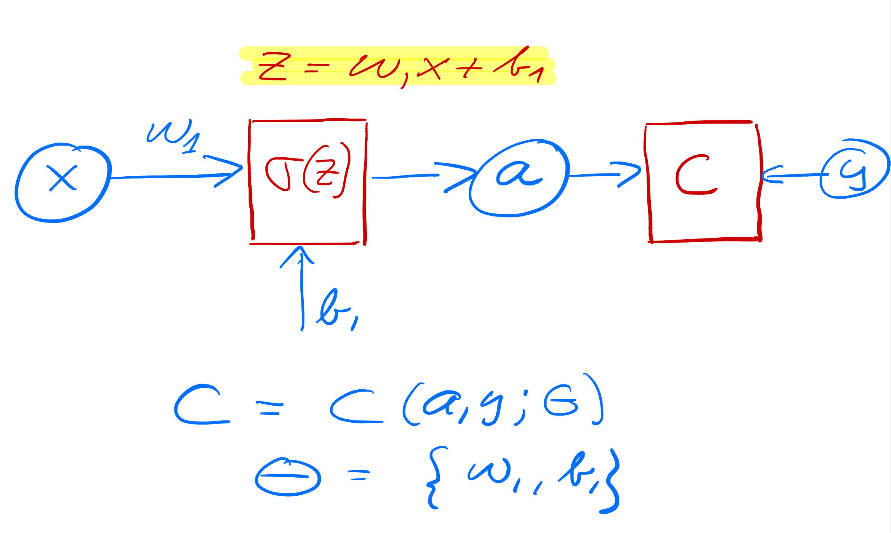
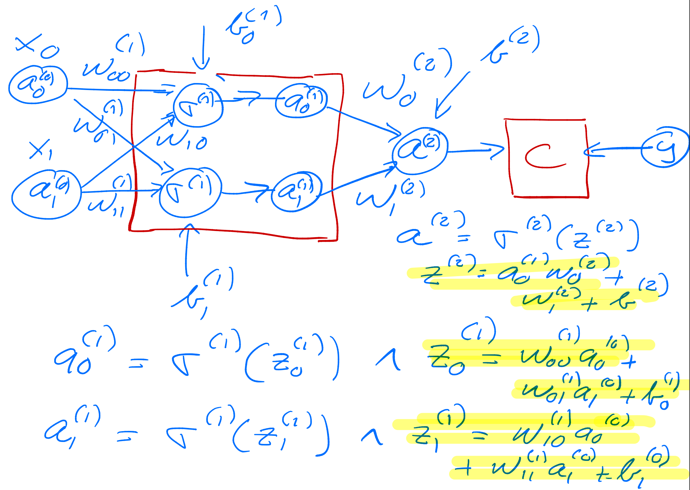

February 5-9: Advanced machine learning and data analysis for the physical sciences
February 6, 2024
Overview of fourth week, February 5-9
- Review of neural networks and automatic differentiation
- Discussion of codes
- Start discussing Convolutional Neural Networks (CNNs).
Mathematics of deep learning
- The Modern Mathematics of Deep Learning, by Julius Berner, Philipp Grohs, Gitta Kutyniok, Philipp Petersen, published as Mathematical Aspects of Deep Learning, pp. 1-111. Cambridge University Press, 2022
- Mathematical Introduction to Deep Learning: Methods, Implementations, and Theory, Arnulf Jentzen, Benno Kuckuck, Philippe von Wurstemberger
Reminder on books with hands-on material and codes
All three books have GitHub addresses from where one can download all codes. We will borrow most of the material from these three texts as well as from Goodfellow, Bengio and Courville's text Deep Learning
Reading recommendations
- Rashkca et al., chapter 11, jupyter-notebook sent separately, from GitHub
- Goodfellow et al, chapter 6 and 7 contain most of the neural network background.
- For CNNs, Goodfellow etal chapter 9 and Rashcka et al., chapter 14
Videos on CNNs
Excellent lectures on CNNs and Neural Networks
First network example, simple percepetron with one input
As yet another example we define now a simple perceptron model with all quantities given by scalars. We consider only one input variable \( x \) and one target value \( y \). We define an activation function \( \sigma_1 \) which takes as input
$$
z_1 = w_1x+b_1,
$$
where \( w_1 \) is the weight and \( b_1 \) is the bias. These are the parameters we want to optimize. The output is \( a_1=\sigma(z_1) \) (see graph from whiteboard notes). This output is then fed into the cost/loss function, which we here for the sake of simplicity just define as the squared error
$$
C(x;w_1,b_1)=\frac{1}{2}(a_1-y)^2.
$$
Layout of a simple neural network with no hidden layer

Optimizing the parameters
In setting up the feed forward and back propagation parts of the algorithm, we need now the derivative of the various variables we want to train.
We need
$$
\frac{\partial C}{\partial w_1} \hspace{0.1cm}\mathrm{and}\hspace{0.1cm}\frac{\partial C}{\partial b_1}.
$$
Using the chain rule we find
$$
\frac{\partial C}{\partial w_1}=\frac{\partial C}{\partial a_1}\frac{\partial a_1}{\partial z_1}\frac{\partial z_1}{\partial w_1}=(a_1-y)\sigma_1'x,
$$
and
$$
\frac{\partial C}{\partial b_1}=\frac{\partial C}{\partial a_1}\frac{\partial a_1}{\partial z_1}\frac{\partial z_1}{\partial b_1}=(a_1-y)\sigma_1',
$$
which we later will just define as
$$
\frac{\partial C}{\partial a_1}\frac{\partial a_1}{\partial z_1}=\delta_1.
$$
Implementing the simple perceptron model
In the example code here we implement the above equations (with explict expressions for the derivatives) with just one input variable \( x \) and one output variable. The target value \( y=2x+1 \) is a simple linear function in \( x \). Since this is a regression problem, we define the cost function to be proportional to the least squares error
$$
C(y,w_1,b_1)=\frac{1}{2}(a_1-y)^2,
$$
with \( a_1 \) the output from the network.
# import necessary packages
import numpy as np
import matplotlib.pyplot as plt
def feed_forward(x):
# weighted sum of inputs to the output layer
z_1 = x*output_weights + output_bias
# Output from output node (one node only)
# Here the output is equal to the input
a_1 = z_1
return a_1
def backpropagation(x, y):
a_1 = feed_forward(x)
# derivative of cost function
derivative_cost = a_1 - y
# the variable delta in the equations, note that output a_1 = z_1, its derivatives wrt z_o is thus 1
delta_1 = derivative_cost
# gradients for the output layer
output_weights_gradient = delta_1*x
output_bias_gradient = delta_1
# The cost function is 0.5*(a_1-y)^2. This gives a measure of the error for each iteration
return output_weights_gradient, output_bias_gradient
# ensure the same random numbers appear every time
np.random.seed(0)
# Input variable
x = 4.0
# Target values
y = 2*x+1.0
# Defining the neural network
n_inputs = 1
n_outputs = 1
# Initialize the network
# weights and bias in the output layer
output_weights = np.random.randn()
output_bias = np.random.randn()
# implementing a simple gradient descent approach with fixed learning rate
eta = 0.01
for i in range(40):
# calculate gradients from back propagation
derivative_w1, derivative_b1 = backpropagation(x, y)
# update weights and biases
output_weights -= eta * derivative_w1
output_bias -= eta * derivative_b1
# our final prediction after training
ytilde = output_weights*x+output_bias
print(0.5*((ytilde-y)**2))
Running this code gives us an acceptable results after some 40-50 iterations. Note that the results depend on the value of the learning rate.
Exercise 1: Extensions to the above code
Feel free to add more input nodes and weights to the above code. Furthermore, try to increase the amount of input and target/output data. Try also to perform calculations for more values of the learning rates. Feel free to add either hyperparameters with an \( l_1 \) norm or an \( l_2 \) norm and discuss your results.
You could also try to change the function \( f(x)=y \) from a linear polynomial in \( x \) to a higher-order polynomial. Comment your results.
Hint: Increasing the number of input variables and input nodes requires a rewrite of the input data in terms of a matrix. You need to figure out the correct dimensionalities.
Adding a hidden layer
We change our simple model to (see graph below) a network with just one hidden layer but with scalar variables only.
Our output variable changes to \( a_2 \) and \( a_1 \) is now the output from the hidden node and \( a_0=x \). We have then
$$
z_1 = w_1a_0+b_1 \hspace{0.1cm} \wedge a_1 = \sigma_1(z_1),
$$
$$
z_2 = w_2a_1+b_2 \hspace{0.1cm} \wedge a_2 = \sigma_2(z_2),
$$
and the cost function
$$
C(x;\boldsymbol{\Theta})=\frac{1}{2}(a_2-y)^2,
$$
with \( \boldsymbol{\Theta}=[w_1,w_2,b_1,b_2] \).
Layout of a simple neural network with one hidden layer

The derivatives
The derivatives are now, using the chain rule again
$$
\frac{\partial C}{\partial w_2}=\frac{\partial C}{\partial a_2}\frac{\partial a_2}{\partial z_2}\frac{\partial z_2}{\partial w_2}=(a_2-y)\sigma_2'a_1=\delta_2a_1,
$$
$$
\frac{\partial C}{\partial b_2}=\frac{\partial C}{\partial a_2}\frac{\partial a_2}{\partial z_2}\frac{\partial z_2}{\partial b_2}=(a_2-y)\sigma_2'=\delta_2,
$$
$$
\frac{\partial C}{\partial w_1}=\frac{\partial C}{\partial a_2}\frac{\partial a_2}{\partial z_2}\frac{\partial z_2}{\partial a_1}\frac{\partial a_1}{\partial z_1}\frac{\partial z_1}{\partial w_1}=(a_2-y)\sigma_2'a_1\sigma_1'a_0,
$$
$$
\frac{\partial C}{\partial b_1}=\frac{\partial C}{\partial a_2}\frac{\partial a_2}{\partial z_2}\frac{\partial z_2}{\partial a_1}\frac{\partial a_1}{\partial z_1}\frac{\partial z_1}{\partial b_1}=(a_2-y)\sigma_2'\sigma_1'=\delta_1.
$$
Can you generalize this to more than one hidden layer?
Important observations
From the above equations we see that the derivatives of the activation functions play a central role. If they vanish, the training may stop. This is called the vanishing gradient problem, see discussions below. If they become large, the parameters \( w_i \) and \( b_i \) may simply go to infinity. This is referenced as the exploding gradient problem.
The training
The training of the parameters is done through various gradient descent approximations with
$$
w_{i}\leftarrow w_{i}- \eta \delta_i a_{i-1},
$$
and
$$
b_i \leftarrow b_i-\eta \delta_i,
$$
with \( \eta \) is the learning rate.
One iteration consists of one feed forward step and one back-propagation step. Each back-propagation step does one update of the parameters \( \boldsymbol{\Theta} \).
For the first hidden layer \( a_{i-1}=a_0=x \) for this simple model.
Code example
The code here implements the above model with one hidden layer and scalar variables for the same function we studied in the previous example. The code is however set up so that we can add multiple inputs \( x \) and target values \( y \). Note also that we have the possibility of defining a feature matrix \( \boldsymbol{X} \) with more than just one column for the input values. This will turn useful in our next example. We have also defined matrices and vectors for all of our operations although it is not necessary here.
import numpy as np
# We use the Sigmoid function as activation function
def sigmoid(z):
return 1.0/(1.0+np.exp(-z))
def forwardpropagation(x):
# weighted sum of inputs to the hidden layer
z_1 = np.matmul(x, w_1) + b_1
# activation in the hidden layer
a_1 = sigmoid(z_1)
# weighted sum of inputs to the output layer
z_2 = np.matmul(a_1, w_2) + b_2
a_2 = z_2
return a_1, a_2
def backpropagation(x, y):
a_1, a_2 = forwardpropagation(x)
# parameter delta for the output layer, note that a_2=z_2 and its derivative wrt z_2 is just 1
delta_2 = a_2 - y
print(0.5*((a_2-y)**2))
# delta for the hidden layer
delta_1 = np.matmul(delta_2, w_2.T) * a_1 * (1 - a_1)
# gradients for the output layer
output_weights_gradient = np.matmul(a_1.T, delta_2)
output_bias_gradient = np.sum(delta_2, axis=0)
# gradient for the hidden layer
hidden_weights_gradient = np.matmul(x.T, delta_1)
hidden_bias_gradient = np.sum(delta_1, axis=0)
return output_weights_gradient, output_bias_gradient, hidden_weights_gradient, hidden_bias_gradient
# ensure the same random numbers appear every time
np.random.seed(0)
# Input variable
x = np.array([4.0],dtype=np.float64)
# Target values
y = 2*x+1.0
# Defining the neural network, only scalars here
n_inputs = x.shape
n_features = 1
n_hidden_neurons = 1
n_outputs = 1
# Initialize the network
# weights and bias in the hidden layer
w_1 = np.random.randn(n_features, n_hidden_neurons)
b_1 = np.zeros(n_hidden_neurons) + 0.01
# weights and bias in the output layer
w_2 = np.random.randn(n_hidden_neurons, n_outputs)
b_2 = np.zeros(n_outputs) + 0.01
eta = 0.1
for i in range(50):
# calculate gradients
derivW2, derivB2, derivW1, derivB1 = backpropagation(x, y)
# update weights and biases
w_2 -= eta * derivW2
b_2 -= eta * derivB2
w_1 -= eta * derivW1
b_1 -= eta * derivB1
We see that after some few iterations (the results do depend on the learning rate however), we get an error which is rather small.
Exercise 2: Including more data
Try to increase the amount of input and target/output data. Try also to perform calculations for more values of the learning rates. Feel free to add either hyperparameters with an \( l_1 \) norm or an \( l_2 \) norm and discuss your results. Discuss your results as functions of the amount of training data and various learning rates.
Challenge: Try to change the activation functions and replace the hard-coded analytical expressions with automatic derivation via either autograd or JAX.
Simple neural network and the back propagation equations
Let us now try to increase our level of ambition and attempt at setting up the equations for a neural network with two input nodes, one hidden layer with two hidden nodes and one output layer with one output node/neuron only (see graph)..
We need to define the following parameters and variables with the input layer (layer \( (0) \)) where we label the nodes \( x_0 \) and \( x_1 \)
$$
x_0 = a_0^{(0)} \wedge x_1 = a_1^{(0)}.
$$
The hidden layer (layer \( (1) \)) has nodes which yield the outputs \( a_0^{(1)} \) and \( a_1^{(1)} \)) with weight \( \boldsymbol{w} \) and bias \( \boldsymbol{b} \) parameters
$$
w_{ij}^{(1)}=\left\{w_{00}^{(1)},w_{01}^{(1)},w_{10}^{(1)},w_{11}^{(1)}\right\} \wedge b^{(1)}=\left\{b_0^{(1)},b_1^{(1)}\right\}.
$$
Layout of a simple neural network with two input nodes, one hidden layer and one output node

The ouput layer
Finally, we have the ouput layer given by layer label \( (2) \) with output \( a^{(2)} \) and weights and biases to be determined given by the variables
$$
w_{i}^{(2)}=\left\{w_{0}^{(2)},w_{1}^{(2)}\right\} \wedge b^{(2)}.
$$
Our output is \( \tilde{y}=a^{(2)} \) and we define a generic cost function \( C(a^{(2)},y;\boldsymbol{\Theta}) \) where \( y \) is the target value (a scalar here). The parameters we need to optimize are given by
$$
\boldsymbol{\Theta}=\left\{w_{00}^{(1)},w_{01}^{(1)},w_{10}^{(1)},w_{11}^{(1)},w_{0}^{(2)},w_{1}^{(2)},b_0^{(1)},b_1^{(1)},b^{(2)}\right\}.
$$
Compact expressions
We can define the inputs to the activation functions for the various layers in terms of various matrix-vector multiplications and vector additions. The inputs to the first hidden layer are
$$
\begin{bmatrix}z_0^{(1)} \\ z_1^{(1)} \end{bmatrix}=\begin{bmatrix}w_{00}^{(1)} & w_{01}^{(1)}\\ w_{10}^{(1)} &w_{11}^{(1)} \end{bmatrix}\begin{bmatrix}a_0^{(0)} \\ a_1^{(0)} \end{bmatrix}+\begin{bmatrix}b_0^{(1)} \\ b_1^{(1)} \end{bmatrix},
$$
with outputs
$$
\begin{bmatrix}a_0^{(1)} \\ a_1^{(1)} \end{bmatrix}=\begin{bmatrix}\sigma^{(1)}(z_0^{(1)}) \\ \sigma^{(1)}(z_1^{(1)}) \end{bmatrix}.
$$
Output layer
For the final output layer we have the inputs to the final activation function
$$
z^{(2)} = w_{0}^{(2)}a_0^{(1)} +w_{1}^{(2)}a_1^{(1)}+b^{(2)},
$$
resulting in the output
$$
a^{(2)}=\sigma^{(2)}(z^{(2)}).
$$
Explicit derivatives
In total we have nine parameters which we need to train. Using the chain rule (or just the back-propagation algorithm) we can find all derivatives. Since we will use automatic differentiation in reverse mode, we start with the derivatives of the cost function with respect to the parameters of the output layer, namely
$$
\frac{\partial C}{\partial w_{i}^{(2)}}=\frac{\partial C}{\partial a^{(2)}}\frac{\partial a^{(2)}}{\partial z^{(2)}}\frac{\partial z^{(2)}}{\partial w_{i}^{(2)}}=\delta^{(2)}a_i^{(1)},
$$
with
$$
\delta^{(2)}=\frac{\partial C}{\partial a^{(2)}}\frac{\partial a^{(2)}}{\partial z^{(2)}}
$$
and finally
$$
\frac{\partial C}{\partial b^{(2)}}=\frac{\partial C}{\partial a^{(2)}}\frac{\partial a^{(2)}}{\partial z^{(2)}}\frac{\partial z^{(2)}}{\partial b^{(2)}}=\delta^{(2)}.
$$
Derivatives of the hidden layer
Using the chain rule we have the following expressions for say one of the weight parameters (it is easy to generalize to the other weight parameters)
$$
\frac{\partial C}{\partial w_{00}^{(1)}}=\frac{\partial C}{\partial a^{(2)}}\frac{\partial a^{(2)}}{\partial z^{(2)}}
\frac{\partial z^{(2)}}{\partial z_0^{(1)}}\frac{\partial z_0^{(1)}}{\partial w_{00}^{(1)}}= \delta^{(2)}\frac{\partial z^{(2)}}{\partial z_0^{(1)}}\frac{\partial z_0^{(1)}}{\partial w_{00}^{(1)}},
$$
which, noting that
$$
z^{(2)} =w_0^{(2)}a_0^{(1)}+w_1^{(2)}a_1^{(1)}+b^{(2)},
$$
allows us to rewrite
$$
\frac{\partial z^{(2)}}{\partial z_0^{(1)}}\frac{\partial z_0^{(1)}}{\partial w_{00}^{(1)}}=w_0^{(2)}\frac{\partial a_0^{(1)}}{\partial z_0^{(1)}}a_0^{(1)}.
$$
Final expression
Defining
$$
\delta_0^{(1)}=w_0^{(2)}\frac{\partial a_0^{(1)}}{\partial z_0^{(1)}}\delta^{(2)},
$$
we have
$$
\frac{\partial C}{\partial w_{00}^{(1)}}=\delta_0^{(1)}a_0^{(1)}.
$$
Similarly, we obtain
$$
\frac{\partial C}{\partial w_{01}^{(1)}}=\delta_0^{(1)}a_1^{(1)}.
$$
Completing the list
Similarly, we find
$$
\frac{\partial C}{\partial w_{10}^{(1)}}=\delta_1^{(1)}a_0^{(1)},
$$
and
$$
\frac{\partial C}{\partial w_{11}^{(1)}}=\delta_1^{(1)}a_1^{(1)},
$$
where we have defined
$$
\delta_1^{(1)}=w_1^{(2)}\frac{\partial a_1^{(1)}}{\partial z_1^{(1)}}\delta^{(2)}.
$$
Final expressions for the biases of the hidden layer
For the sake of completeness, we list the derivatives of the biases, which are
$$
\frac{\partial C}{\partial b_{0}^{(1)}}=\delta_0^{(1)},
$$
and
$$
\frac{\partial C}{\partial b_{1}^{(1)}}=\delta_1^{(1)}.
$$
As we will see below, these expressions can be generalized in a more compact form.
Gradient expressions
For this specific model, with just one output node and two hidden nodes, the gradient descent equations take the following form for output layer
$$
w_{i}^{(2)}\leftarrow w_{i}^{(2)}- \eta \delta^{(2)} a_{i}^{(1)},
$$
and
$$
b^{(2)} \leftarrow b^{(2)}-\eta \delta^{(2)},
$$
and
$$
w_{ij}^{(1)}\leftarrow w_{ij}^{(1)}- \eta \delta_{i}^{(1)} a_{j}^{(0)},
$$
and
$$
b_{i}^{(1)} \leftarrow b_{i}^{(1)}-\eta \delta_{i}^{(1)},
$$
where \( \eta \) is the learning rate.
Program example
We extend our simple code to a function which depends on two variable \( x_0 \) and \( x_1 \), that is
$$
y=f(x_0,x_1)=x_0^2+3x_0x_1+x_1^2+5.
$$
We feed our network with \( n=100 \) entries \( x_0 \) and \( x_1 \). We have thus two features represented by these variable and an input matrix/design matrix \( \boldsymbol{X}\in \mathbf{R}^{n\times 2} \)
$$
\boldsymbol{X}=\begin{bmatrix} x_{00} & x_{01} \\ x_{00} & x_{01} \\ x_{10} & x_{11} \\ x_{20} & x_{21} \\ \dots & \dots \\ \dots & \dots \\ x_{n-20} & x_{n-21} \\ x_{n-10} & x_{n-11} \end{bmatrix}.
$$
Getting serious, the back propagation equations for a neural network
Now it is time to move away from one node in each layer only. Our inputs are also represented either by several inputs.
We have thus
$$
\frac{\partial{\cal C}((\boldsymbol{\Theta}^L)}{\partial w_{jk}^L} = \left(a_j^L - y_j\right)a_j^L(1-a_j^L)a_k^{L-1},
$$
Defining
$$
\delta_j^L = a_j^L(1-a_j^L)\left(a_j^L - y_j\right) = \sigma'(z_j^L)\frac{\partial {\cal C}}{\partial (a_j^L)},
$$
and using the Hadamard product of two vectors we can write this as
$$
\boldsymbol{\delta}^L = \sigma'(\hat{z}^L)\circ\frac{\partial {\cal C}}{\partial (\boldsymbol{a}^L)}.
$$
Analyzing the last results
This is an important expression. The second term on the right handside measures how fast the cost function is changing as a function of the $j$th output activation. If, for example, the cost function doesn't depend much on a particular output node \( j \), then \( \delta_j^L \) will be small, which is what we would expect. The first term on the right, measures how fast the activation function \( f \) is changing at a given activation value \( z_j^L \).
More considerations
Notice that everything in the above equations is easily computed. In particular, we compute \( z_j^L \) while computing the behaviour of the network, and it is only a small additional overhead to compute \( \sigma'(z^L_j) \). The exact form of the derivative with respect to the output depends on the form of the cost function. However, provided the cost function is known there should be little trouble in calculating
$$
\frac{\partial {\cal C}}{\partial (a_j^L)}
$$
With the definition of \( \delta_j^L \) we have a more compact definition of the derivative of the cost function in terms of the weights, namely
$$
\frac{\partial{\cal C}}{\partial w_{jk}^L} = \delta_j^La_k^{L-1}.
$$
Derivatives in terms of \( z_j^L \)
It is also easy to see that our previous equation can be written as
$$
\delta_j^L =\frac{\partial {\cal C}}{\partial z_j^L}= \frac{\partial {\cal C}}{\partial a_j^L}\frac{\partial a_j^L}{\partial z_j^L},
$$
which can also be interpreted as the partial derivative of the cost function with respect to the biases \( b_j^L \), namely
$$
\delta_j^L = \frac{\partial {\cal C}}{\partial b_j^L}\frac{\partial b_j^L}{\partial z_j^L}=\frac{\partial {\cal C}}{\partial b_j^L},
$$
That is, the error \( \delta_j^L \) is exactly equal to the rate of change of the cost function as a function of the bias.
Bringing it together
We have now three equations that are essential for the computations of the derivatives of the cost function at the output layer. These equations are needed to start the algorithm and they are
$$
\begin{equation}
\frac{\partial{\cal C}(\hat{W^L})}{\partial w_{jk}^L} = \delta_j^La_k^{L-1},
\tag{1}
\end{equation}
$$
and
$$
\begin{equation}
\delta_j^L = \sigma'(z_j^L)\frac{\partial {\cal C}}{\partial (a_j^L)},
\tag{2}
\end{equation}
$$
and
$$
\begin{equation}
\delta_j^L = \frac{\partial {\cal C}}{\partial b_j^L},
\tag{3}
\end{equation}
$$
Final back propagating equation
We have that (replacing \( L \) with a general layer \( l \))
$$
\delta_j^l =\frac{\partial {\cal C}}{\partial z_j^l}.
$$
We want to express this in terms of the equations for layer \( l+1 \).
Using the chain rule and summing over all \( k \) entries
We obtain
$$
\delta_j^l =\sum_k \frac{\partial {\cal C}}{\partial z_k^{l+1}}\frac{\partial z_k^{l+1}}{\partial z_j^{l}}=\sum_k \delta_k^{l+1}\frac{\partial z_k^{l+1}}{\partial z_j^{l}},
$$
and recalling that
$$
z_j^{l+1} = \sum_{i=1}^{M_{l}}w_{ij}^{l+1}a_i^{l}+b_j^{l+1},
$$
with \( M_l \) being the number of nodes in layer \( l \), we obtain
$$
\delta_j^l =\sum_k \delta_k^{l+1}w_{kj}^{l+1}\sigma'(z_j^l),
$$
This is our final equation.
We are now ready to set up the algorithm for back propagation and learning the weights and biases.
Setting up the back propagation algorithm
The four equations provide us with a way of computing the gradient of the cost function. Let us write this out in the form of an algorithm.
First, we set up the input data \( \hat{x} \) and the activations \( \hat{z}_1 \) of the input layer and compute the activation function and the pertinent outputs \( \hat{a}^1 \).
Secondly, we perform then the feed forward till we reach the output layer and compute all \( \hat{z}_l \) of the input layer and compute the activation function and the pertinent outputs \( \hat{a}^l \) for \( l=1,2,3,\dots,L \).
Notation: The first hidden layer has \( l=1 \) as label and the final output layer has \( l=L \).
Setting up the back propagation algorithm, part 2
Thereafter we compute the ouput error \( \hat{\delta}^L \) by computing all
$$
\delta_j^L = \sigma'(z_j^L)\frac{\partial {\cal C}}{\partial (a_j^L)}.
$$
Then we compute the back propagate error for each \( l=L-1,L-2,\dots,1 \) as
$$
\delta_j^l = \sum_k \delta_k^{l+1}w_{kj}^{l+1}\sigma'(z_j^l).
$$
Setting up the Back propagation algorithm, part 3
Finally, we update the weights and the biases using gradient descent for each \( l=L-1,L-2,\dots,1 \) and update the weights and biases according to the rules
$$
w_{jk}^l\leftarrow = w_{jk}^l- \eta \delta_j^la_k^{l-1},
$$
$$
b_j^l \leftarrow b_j^l-\eta \frac{\partial {\cal C}}{\partial b_j^l}=b_j^l-\eta \delta_j^l,
$$
with \( \eta \) being the learning rate.
Updating the gradients
With the back propagate error for each \( l=L-1,L-2,\dots,1 \) as
$$
\delta_j^l = \sum_k \delta_k^{l+1}w_{kj}^{l+1}sigma'(z_j^l),
$$
we update the weights and the biases using gradient descent for each \( l=L-1,L-2,\dots,1 \) and update the weights and biases according to the rules
$$
w_{jk}^l\leftarrow = w_{jk}^l- \eta \delta_j^la_k^{l-1},
$$
$$
b_j^l \leftarrow b_j^l-\eta \frac{\partial {\cal C}}{\partial b_j^l}=b_j^l-\eta \delta_j^l,
$$
Fine-tuning neural network hyperparameters
The flexibility of neural networks is also one of their main drawbacks: there are many hyperparameters to tweak. Not only can you use any imaginable network topology (how neurons/nodes are interconnected), but even in a simple FFNN you can change the number of layers, the number of neurons per layer, the type of activation function to use in each layer, the weight initialization logic, the stochastic gradient optmized and much more. How do you know what combination of hyperparameters is the best for your task?
- You can use grid search with cross-validation to find the right hyperparameters.
However,since there are many hyperparameters to tune, and since training a neural network on a large dataset takes a lot of time, you will only be able to explore a tiny part of the hyperparameter space.
- You can use randomized search.
- Or use tools like Oscar, which implements more complex algorithms to help you find a good set of hyperparameters quickly.
Hidden layers
For many problems you can start with just one or two hidden layers and it will work just fine. For the MNIST data set you ca easily get a high accuracy using just one hidden layer with a few hundred neurons. You can reach for this data set above 98% accuracy using two hidden layers with the same total amount of neurons, in roughly the same amount of training time.
For more complex problems, you can gradually ramp up the number of hidden layers, until you start overfitting the training set. Very complex tasks, such as large image classification or speech recognition, typically require networks with dozens of layers and they need a huge amount of training data. However, you will rarely have to train such networks from scratch: it is much more common to reuse parts of a pretrained state-of-the-art network that performs a similar task.
Which activation function should I use?
The Back propagation algorithm we derived above works by going from the output layer to the input layer, propagating the error gradient on the way. Once the algorithm has computed the gradient of the cost function with regards to each parameter in the network, it uses these gradients to update each parameter with a Gradient Descent (GD) step.
Unfortunately for us, the gradients often get smaller and smaller as the algorithm progresses down to the first hidden layers. As a result, the GD update leaves the lower layer connection weights virtually unchanged, and training never converges to a good solution. This is known in the literature as the vanishing gradients problem.
In other cases, the opposite can happen, namely the the gradients can grow bigger and bigger. The result is that many of the layers get large updates of the weights the algorithm diverges. This is the exploding gradients problem, which is mostly encountered in recurrent neural networks. More generally, deep neural networks suffer from unstable gradients, different layers may learn at widely different speeds
Is the Logistic activation function (Sigmoid) our choice?
Although this unfortunate behavior has been empirically observed for quite a while (it was one of the reasons why deep neural networks were mostly abandoned for a long time), it is only around 2010 that significant progress was made in understanding it.
A paper titled Understanding the Difficulty of Training Deep Feedforward Neural Networks by Xavier Glorot and Yoshua Bengio found that the problems with the popular logistic sigmoid activation function and the weight initialization technique that was most popular at the time, namely random initialization using a normal distribution with a mean of 0 and a standard deviation of 1.
They showed that with this activation function and this initialization scheme, the variance of the outputs of each layer is much greater than the variance of its inputs. Going forward in the network, the variance keeps increasing after each layer until the activation function saturates at the top layers. This is actually made worse by the fact that the logistic function has a mean of 0.5, not 0 (the hyperbolic tangent function has a mean of 0 and behaves slightly better than the logistic function in deep networks).
The derivative of the Logistic funtion
Looking at the logistic activation function, when inputs become large (negative or positive), the function saturates at 0 or 1, with a derivative extremely close to 0. Thus when backpropagation kicks in, it has virtually no gradient to propagate back through the network, and what little gradient exists keeps getting diluted as backpropagation progresses down through the top layers, so there is really nothing left for the lower layers.
In their paper, Glorot and Bengio propose a way to significantly alleviate this problem. We need the signal to flow properly in both directions: in the forward direction when making predictions, and in the reverse direction when backpropagating gradients. We don’t want the signal to die out, nor do we want it to explode and saturate. For the signal to flow properly, the authors argue that we need the variance of the outputs of each layer to be equal to the variance of its inputs, and we also need the gradients to have equal variance before and after flowing through a layer in the reverse direction.
Insights from the paper by Glorot and Bengio
One of the insights in the 2010 paper by Glorot and Bengio was that the vanishing/exploding gradients problems were in part due to a poor choice of activation function. Until then most people had assumed that if Nature had chosen to use roughly sigmoid activation functions in biological neurons, they must be an excellent choice. But it turns out that other activation functions behave much better in deep neural networks, in particular the ReLU activation function, mostly because it does not saturate for positive values (and also because it is quite fast to compute).
The RELU function family
The ReLU activation function suffers from a problem known as the dying ReLUs: during training, some neurons effectively die, meaning they stop outputting anything other than 0.
In some cases, you may find that half of your network’s neurons are dead, especially if you used a large learning rate. During training, if a neuron’s weights get updated such that the weighted sum of the neuron’s inputs is negative, it will start outputting 0. When this happen, the neuron is unlikely to come back to life since the gradient of the ReLU function is 0 when its input is negative.
To solve this problem, nowadays practitioners use a variant of the ReLU function, such as the leaky ReLU discussed above or the so-called exponential linear unit (ELU) function
$$
ELU(z) = \left\{\begin{array}{cc} \alpha\left( \exp{(z)}-1\right) & z < 0,\\ z & z \ge 0.\end{array}\right.
$$
Which activation function should we use?
In general it seems that the ELU activation function is better than the leaky ReLU function (and its variants), which is better than ReLU. ReLU performs better than \( \tanh \) which in turn performs better than the logistic function.
If runtime performance is an issue, then you may opt for the leaky ReLU function over the ELU function If you don’t want to tweak yet another hyperparameter, you may just use the default \( \alpha \) of \( 0.01 \) for the leaky ReLU, and \( 1 \) for ELU. If you have spare time and computing power, you can use cross-validation or bootstrap to evaluate other activation functions.
More on activation functions, output layers
In most cases you can use the ReLU activation function in the hidden layers (or one of its variants).
It is a bit faster to compute than other activation functions, and the gradient descent optimization does in general not get stuck.
For the output layer:- For classification the softmax activation function is generally a good choice for classification tasks (when the classes are mutually exclusive).
- For regression tasks, you can simply use no activation function at all.
Batch Normalization
Batch Normalization aims to address the vanishing/exploding gradients problems, and more generally the problem that the distribution of each layer’s inputs changes during training, as the parameters of the previous layers change.
The technique consists of adding an operation in the model just before the activation function of each layer, simply zero-centering and normalizing the inputs, then scaling and shifting the result using two new parameters per layer (one for scaling, the other for shifting). In other words, this operation lets the model learn the optimal scale and mean of the inputs for each layer. In order to zero-center and normalize the inputs, the algorithm needs to estimate the inputs’ mean and standard deviation. It does so by evaluating the mean and standard deviation of the inputs over the current mini-batch, from this the name batch normalization.
Dropout
It is a fairly simple algorithm: at every training step, every neuron (including the input neurons but excluding the output neurons) has a probability \( p \) of being temporarily dropped out, meaning it will be entirely ignored during this training step, but it may be active during the next step.
The hyperparameter \( p \) is called the dropout rate, and it is typically set to 50%. After training, the neurons are not dropped anymore. It is viewed as one of the most popular regularization techniques.
Gradient Clipping
A popular technique to lessen the exploding gradients problem is to simply clip the gradients during backpropagation so that they never exceed some threshold (this is mostly useful for recurrent neural networks).
This technique is called Gradient Clipping.
In general however, Batch Normalization is preferred.
A top-down perspective on Neural networks
The first thing we would like to do is divide the data into two or three parts. A training set, a validation or dev (development) set, and a test set. The test set is the data on which we want to make predictions. The dev set is a subset of the training data we use to check how well we are doing out-of-sample, after training the model on the training dataset. We use the validation error as a proxy for the test error in order to make tweaks to our model. It is crucial that we do not use any of the test data to train the algorithm. This is a cardinal sin in ML. Then:
- Estimate optimal error rate
- Minimize underfitting (bias) on training data set.
- Make sure you are not overfitting.
More top-down perspectives
If the validation and test sets are drawn from the same distributions, then a good performance on the validation set should lead to similarly good performance on the test set.
However, sometimes the training data and test data differ in subtle ways because, for example, they are collected using slightly different methods, or because it is cheaper to collect data in one way versus another. In this case, there can be a mismatch between the training and test data. This can lead to the neural network overfitting these small differences between the test and training sets, and a poor performance on the test set despite having a good performance on the validation set. To rectify this, Andrew Ng suggests making two validation or dev sets, one constructed from the training data and one constructed from the test data. The difference between the performance of the algorithm on these two validation sets quantifies the train-test mismatch. This can serve as another important diagnostic when using DNNs for supervised learning.
Limitations of supervised learning with deep networks
Like all statistical methods, supervised learning using neural networks has important limitations. This is especially important when one seeks to apply these methods, especially to physics problems. Like all tools, DNNs are not a universal solution. Often, the same or better performance on a task can be achieved by using a few hand-engineered features (or even a collection of random features).
Limitations of NNs
Here we list some of the important limitations of supervised neural network based models.
- Need labeled data. All supervised learning methods, DNNs for supervised learning require labeled data. Often, labeled data is harder to acquire than unlabeled data (e.g. one must pay for human experts to label images).
- Supervised neural networks are extremely data intensive. DNNs are data hungry. They perform best when data is plentiful. This is doubly so for supervised methods where the data must also be labeled. The utility of DNNs is extremely limited if data is hard to acquire or the datasets are small (hundreds to a few thousand samples). In this case, the performance of other methods that utilize hand-engineered features can exceed that of DNNs.
Homogeneous data
- Homogeneous data. Almost all DNNs deal with homogeneous data of one type. It is very hard to design architectures that mix and match data types (i.e. some continuous variables, some discrete variables, some time series). In applications beyond images, video, and language, this is often what is required. In contrast, ensemble models like random forests or gradient-boosted trees have no difficulty handling mixed data types.
More limitations
- Many problems are not about prediction. In natural science we are often interested in learning something about the underlying distribution that generates the data. In this case, it is often difficult to cast these ideas in a supervised learning setting. While the problems are related, it is possible to make good predictions with a wrong model. The model might or might not be useful for understanding the underlying science.
Some of these remarks are particular to DNNs, others are shared by all supervised learning methods. This motivates the use of unsupervised methods which in part circumvent these problems.
Building a neural network code
Here we present a flexible object oriented codebase for a feed forward neural network, along with a demonstration of how to use it. Before we get into the details of the neural network, we will first present some implementations of various schedulers, cost functions and activation functions that can be used together with the neural network.
The codes here were developed by Eric Reber and Gregor Kajda during spring 2023. After these codes we present the TensorFlow inplementation. Pytorch will be discussed next week.
Learning rate methods
The code below shows object oriented implementations of the Constant, Momentum, Adagrad, AdagradMomentum, RMS prop and Adam schedulers. All of the classes belong to the shared abstract Scheduler class, and share the update$\_$change() and reset() methods allowing for any of the schedulers to be seamlessly used during the training stage, as will later be shown in the fit() method of the neural network. Update$\_$change() only has one parameter, the gradient, and returns the change which will be subtracted from the weights. The reset() function takes no parameters, and resets the desired variables. For Constant and Momentum, reset does nothing.
import autograd.numpy as np
class Scheduler:
"""
Abstract class for Schedulers
"""
def __init__(self, eta):
self.eta = eta
# should be overwritten
def update_change(self, gradient):
raise NotImplementedError
# overwritten if needed
def reset(self):
pass
class Constant(Scheduler):
def __init__(self, eta):
super().__init__(eta)
def update_change(self, gradient):
return self.eta * gradient
def reset(self):
pass
class Momentum(Scheduler):
def __init__(self, eta: float, momentum: float):
super().__init__(eta)
self.momentum = momentum
self.change = 0
def update_change(self, gradient):
self.change = self.momentum * self.change + self.eta * gradient
return self.change
def reset(self):
pass
class Adagrad(Scheduler):
def __init__(self, eta):
super().__init__(eta)
self.G_t = None
def update_change(self, gradient):
delta = 1e-8 # avoid division ny zero
if self.G_t is None:
self.G_t = np.zeros((gradient.shape[0], gradient.shape[0]))
self.G_t += gradient @ gradient.T
G_t_inverse = 1 / (
delta + np.sqrt(np.reshape(np.diagonal(self.G_t), (self.G_t.shape[0], 1)))
)
return self.eta * gradient * G_t_inverse
def reset(self):
self.G_t = None
class AdagradMomentum(Scheduler):
def __init__(self, eta, momentum):
super().__init__(eta)
self.G_t = None
self.momentum = momentum
self.change = 0
def update_change(self, gradient):
delta = 1e-8 # avoid division ny zero
if self.G_t is None:
self.G_t = np.zeros((gradient.shape[0], gradient.shape[0]))
self.G_t += gradient @ gradient.T
G_t_inverse = 1 / (
delta + np.sqrt(np.reshape(np.diagonal(self.G_t), (self.G_t.shape[0], 1)))
)
self.change = self.change * self.momentum + self.eta * gradient * G_t_inverse
return self.change
def reset(self):
self.G_t = None
class RMS_prop(Scheduler):
def __init__(self, eta, rho):
super().__init__(eta)
self.rho = rho
self.second = 0.0
def update_change(self, gradient):
delta = 1e-8 # avoid division ny zero
self.second = self.rho * self.second + (1 - self.rho) * gradient * gradient
return self.eta * gradient / (np.sqrt(self.second + delta))
def reset(self):
self.second = 0.0
class Adam(Scheduler):
def __init__(self, eta, rho, rho2):
super().__init__(eta)
self.rho = rho
self.rho2 = rho2
self.moment = 0
self.second = 0
self.n_epochs = 1
def update_change(self, gradient):
delta = 1e-8 # avoid division ny zero
self.moment = self.rho * self.moment + (1 - self.rho) * gradient
self.second = self.rho2 * self.second + (1 - self.rho2) * gradient * gradient
moment_corrected = self.moment / (1 - self.rho**self.n_epochs)
second_corrected = self.second / (1 - self.rho2**self.n_epochs)
return self.eta * moment_corrected / (np.sqrt(second_corrected + delta))
def reset(self):
self.n_epochs += 1
self.moment = 0
self.second = 0
Usage of the above learning rate schedulers
To initalize a scheduler, simply create the object and pass in the necessary parameters such as the learning rate and the momentum as shown below. As the Scheduler class is an abstract class it should not called directly, and will raise an error upon usage.
momentum_scheduler = Momentum(eta=1e-3, momentum=0.9)
adam_scheduler = Adam(eta=1e-3, rho=0.9, rho2=0.999)
Here is a small example for how a segment of code using schedulers could look. Switching out the schedulers is simple.
weights = np.ones((3,3))
print(f"Before scheduler:\n{weights=}")
epochs = 10
for e in range(epochs):
gradient = np.random.rand(3, 3)
change = adam_scheduler.update_change(gradient)
weights = weights - change
adam_scheduler.reset()
print(f"\nAfter scheduler:\n{weights=}")
Cost functions
Here we discuss cost functions that can be used when creating the neural network. Every cost function takes the target vector as its parameter, and returns a function valued only at \( x \) such that it may easily be differentiated.
import autograd.numpy as np
def CostOLS(target):
def func(X):
return (1.0 / target.shape[0]) * np.sum((target - X) ** 2)
return func
def CostLogReg(target):
def func(X):
return -(1.0 / target.shape[0]) * np.sum(
(target * np.log(X + 10e-10)) + ((1 - target) * np.log(1 - X + 10e-10))
)
return func
def CostCrossEntropy(target):
def func(X):
return -(1.0 / target.size) * np.sum(target * np.log(X + 10e-10))
return func
Below we give a short example of how these cost function may be used to obtain results if you wish to test them out on your own using AutoGrad's automatics differentiation.
from autograd import grad
target = np.array([[1, 2, 3]]).T
a = np.array([[4, 5, 6]]).T
cost_func = CostCrossEntropy
cost_func_derivative = grad(cost_func(target))
valued_at_a = cost_func_derivative(a)
print(f"Derivative of cost function {cost_func.__name__} valued at a:\n{valued_at_a}")
Activation functions
Finally, before we look at the neural network, we will look at the activation functions which can be specified between the hidden layers and as the output function. Each function can be valued for any given vector or matrix X, and can be differentiated via derivate().
import autograd.numpy as np
from autograd import elementwise_grad
def identity(X):
return X
def sigmoid(X):
try:
return 1.0 / (1 + np.exp(-X))
except FloatingPointError:
return np.where(X > np.zeros(X.shape), np.ones(X.shape), np.zeros(X.shape))
def softmax(X):
X = X - np.max(X, axis=-1, keepdims=True)
delta = 10e-10
return np.exp(X) / (np.sum(np.exp(X), axis=-1, keepdims=True) + delta)
def RELU(X):
return np.where(X > np.zeros(X.shape), X, np.zeros(X.shape))
def LRELU(X):
delta = 10e-4
return np.where(X > np.zeros(X.shape), X, delta * X)
def derivate(func):
if func.__name__ == "RELU":
def func(X):
return np.where(X > 0, 1, 0)
return func
elif func.__name__ == "LRELU":
def func(X):
delta = 10e-4
return np.where(X > 0, 1, delta)
return func
else:
return elementwise_grad(func)
Below follows a short demonstration of how to use an activation function. The derivative of the activation function will be important when calculating the output delta term during backpropagation. Note that derivate() can also be used for cost functions for a more generalized approach.
z = np.array([[4, 5, 6]]).T
print(f"Input to activation function:\n{z}")
act_func = sigmoid
a = act_func(z)
print(f"\nOutput from {act_func.__name__} activation function:\n{a}")
act_func_derivative = derivate(act_func)
valued_at_z = act_func_derivative(a)
print(f"\nDerivative of {act_func.__name__} activation function valued at z:\n{valued_at_z}")
The Neural Network
Now that we have gotten a good understanding of the implementation of some important components, we can take a look at an object oriented implementation of a feed forward neural network. The feed forward neural network has been implemented as a class named FFNN, which can be initiated as a regressor or classifier dependant on the choice of cost function. The FFNN can have any number of input nodes, hidden layers with any amount of hidden nodes, and any amount of output nodes meaning it can perform multiclass classification as well as binary classification and regression problems. Although there is a lot of code present, it makes for an easy to use and generalizeable interface for creating many types of neural networks as will be demonstrated below.
import math
import autograd.numpy as np
import sys
import warnings
from autograd import grad, elementwise_grad
from random import random, seed
from copy import deepcopy, copy
from typing import Tuple, Callable
from sklearn.utils import resample
warnings.simplefilter("error")
class FFNN:
"""
Description:
------------
Feed Forward Neural Network with interface enabling flexible design of a
nerual networks architecture and the specification of activation function
in the hidden layers and output layer respectively. This model can be used
for both regression and classification problems, depending on the output function.
Attributes:
------------
I dimensions (tuple[int]): A list of positive integers, which specifies the
number of nodes in each of the networks layers. The first integer in the array
defines the number of nodes in the input layer, the second integer defines number
of nodes in the first hidden layer and so on until the last number, which
specifies the number of nodes in the output layer.
II hidden_func (Callable): The activation function for the hidden layers
III output_func (Callable): The activation function for the output layer
IV cost_func (Callable): Our cost function
V seed (int): Sets random seed, makes results reproducible
"""
def __init__(
self,
dimensions: tuple[int],
hidden_func: Callable = sigmoid,
output_func: Callable = lambda x: x,
cost_func: Callable = CostOLS,
seed: int = None,
):
self.dimensions = dimensions
self.hidden_func = hidden_func
self.output_func = output_func
self.cost_func = cost_func
self.seed = seed
self.weights = list()
self.schedulers_weight = list()
self.schedulers_bias = list()
self.a_matrices = list()
self.z_matrices = list()
self.classification = None
self.reset_weights()
self._set_classification()
def fit(
self,
X: np.ndarray,
t: np.ndarray,
scheduler: Scheduler,
batches: int = 1,
epochs: int = 100,
lam: float = 0,
X_val: np.ndarray = None,
t_val: np.ndarray = None,
):
"""
Description:
------------
This function performs the training the neural network by performing the feedforward and backpropagation
algorithm to update the networks weights.
Parameters:
------------
I X (np.ndarray) : training data
II t (np.ndarray) : target data
III scheduler (Scheduler) : specified scheduler (algorithm for optimization of gradient descent)
IV scheduler_args (list[int]) : list of all arguments necessary for scheduler
Optional Parameters:
------------
V batches (int) : number of batches the datasets are split into, default equal to 1
VI epochs (int) : number of iterations used to train the network, default equal to 100
VII lam (float) : regularization hyperparameter lambda
VIII X_val (np.ndarray) : validation set
IX t_val (np.ndarray) : validation target set
Returns:
------------
I scores (dict) : A dictionary containing the performance metrics of the model.
The number of the metrics depends on the parameters passed to the fit-function.
"""
# setup
if self.seed is not None:
np.random.seed(self.seed)
val_set = False
if X_val is not None and t_val is not None:
val_set = True
# creating arrays for score metrics
train_errors = np.empty(epochs)
train_errors.fill(np.nan)
val_errors = np.empty(epochs)
val_errors.fill(np.nan)
train_accs = np.empty(epochs)
train_accs.fill(np.nan)
val_accs = np.empty(epochs)
val_accs.fill(np.nan)
self.schedulers_weight = list()
self.schedulers_bias = list()
batch_size = X.shape[0] // batches
X, t = resample(X, t)
# this function returns a function valued only at X
cost_function_train = self.cost_func(t)
if val_set:
cost_function_val = self.cost_func(t_val)
# create schedulers for each weight matrix
for i in range(len(self.weights)):
self.schedulers_weight.append(copy(scheduler))
self.schedulers_bias.append(copy(scheduler))
print(f"{scheduler.__class__.__name__}: Eta={scheduler.eta}, Lambda={lam}")
try:
for e in range(epochs):
for i in range(batches):
# allows for minibatch gradient descent
if i == batches - 1:
# If the for loop has reached the last batch, take all thats left
X_batch = X[i * batch_size :, :]
t_batch = t[i * batch_size :, :]
else:
X_batch = X[i * batch_size : (i + 1) * batch_size, :]
t_batch = t[i * batch_size : (i + 1) * batch_size, :]
self._feedforward(X_batch)
self._backpropagate(X_batch, t_batch, lam)
# reset schedulers for each epoch (some schedulers pass in this call)
for scheduler in self.schedulers_weight:
scheduler.reset()
for scheduler in self.schedulers_bias:
scheduler.reset()
# computing performance metrics
pred_train = self.predict(X)
train_error = cost_function_train(pred_train)
train_errors[e] = train_error
if val_set:
pred_val = self.predict(X_val)
val_error = cost_function_val(pred_val)
val_errors[e] = val_error
if self.classification:
train_acc = self._accuracy(self.predict(X), t)
train_accs[e] = train_acc
if val_set:
val_acc = self._accuracy(pred_val, t_val)
val_accs[e] = val_acc
# printing progress bar
progression = e / epochs
print_length = self._progress_bar(
progression,
train_error=train_errors[e],
train_acc=train_accs[e],
val_error=val_errors[e],
val_acc=val_accs[e],
)
except KeyboardInterrupt:
# allows for stopping training at any point and seeing the result
pass
# visualization of training progression (similiar to tensorflow progression bar)
sys.stdout.write("\r" + " " * print_length)
sys.stdout.flush()
self._progress_bar(
1,
train_error=train_errors[e],
train_acc=train_accs[e],
val_error=val_errors[e],
val_acc=val_accs[e],
)
sys.stdout.write("")
# return performance metrics for the entire run
scores = dict()
scores["train_errors"] = train_errors
if val_set:
scores["val_errors"] = val_errors
if self.classification:
scores["train_accs"] = train_accs
if val_set:
scores["val_accs"] = val_accs
return scores
def predict(self, X: np.ndarray, *, threshold=0.5):
"""
Description:
------------
Performs prediction after training of the network has been finished.
Parameters:
------------
I X (np.ndarray): The design matrix, with n rows of p features each
Optional Parameters:
------------
II threshold (float) : sets minimal value for a prediction to be predicted as the positive class
in classification problems
Returns:
------------
I z (np.ndarray): A prediction vector (row) for each row in our design matrix
This vector is thresholded if regression=False, meaning that classification results
in a vector of 1s and 0s, while regressions in an array of decimal numbers
"""
predict = self._feedforward(X)
if self.classification:
return np.where(predict > threshold, 1, 0)
else:
return predict
def reset_weights(self):
"""
Description:
------------
Resets/Reinitializes the weights in order to train the network for a new problem.
"""
if self.seed is not None:
np.random.seed(self.seed)
self.weights = list()
for i in range(len(self.dimensions) - 1):
weight_array = np.random.randn(
self.dimensions[i] + 1, self.dimensions[i + 1]
)
weight_array[0, :] = np.random.randn(self.dimensions[i + 1]) * 0.01
self.weights.append(weight_array)
def _feedforward(self, X: np.ndarray):
"""
Description:
------------
Calculates the activation of each layer starting at the input and ending at the output.
Each following activation is calculated from a weighted sum of each of the preceeding
activations (except in the case of the input layer).
Parameters:
------------
I X (np.ndarray): The design matrix, with n rows of p features each
Returns:
------------
I z (np.ndarray): A prediction vector (row) for each row in our design matrix
"""
# reset matrices
self.a_matrices = list()
self.z_matrices = list()
# if X is just a vector, make it into a matrix
if len(X.shape) == 1:
X = X.reshape((1, X.shape[0]))
# Add a coloumn of zeros as the first coloumn of the design matrix, in order
# to add bias to our data
bias = np.ones((X.shape[0], 1)) * 0.01
X = np.hstack([bias, X])
# a^0, the nodes in the input layer (one a^0 for each row in X - where the
# exponent indicates layer number).
a = X
self.a_matrices.append(a)
self.z_matrices.append(a)
# The feed forward algorithm
for i in range(len(self.weights)):
if i < len(self.weights) - 1:
z = a @ self.weights[i]
self.z_matrices.append(z)
a = self.hidden_func(z)
# bias column again added to the data here
bias = np.ones((a.shape[0], 1)) * 0.01
a = np.hstack([bias, a])
self.a_matrices.append(a)
else:
try:
# a^L, the nodes in our output layers
z = a @ self.weights[i]
a = self.output_func(z)
self.a_matrices.append(a)
self.z_matrices.append(z)
except Exception as OverflowError:
print(
"OverflowError in fit() in FFNN\nHOW TO DEBUG ERROR: Consider lowering your learning rate or scheduler specific parameters such as momentum, or check if your input values need scaling"
)
# this will be a^L
return a
def _backpropagate(self, X, t, lam):
"""
Description:
------------
Performs the backpropagation algorithm. In other words, this method
calculates the gradient of all the layers starting at the
output layer, and moving from right to left accumulates the gradient until
the input layer is reached. Each layers respective weights are updated while
the algorithm propagates backwards from the output layer (auto-differentation in reverse mode).
Parameters:
------------
I X (np.ndarray): The design matrix, with n rows of p features each.
II t (np.ndarray): The target vector, with n rows of p targets.
III lam (float32): regularization parameter used to punish the weights in case of overfitting
Returns:
------------
No return value.
"""
out_derivative = derivate(self.output_func)
hidden_derivative = derivate(self.hidden_func)
for i in range(len(self.weights) - 1, -1, -1):
# delta terms for output
if i == len(self.weights) - 1:
# for multi-class classification
if (
self.output_func.__name__ == "softmax"
):
delta_matrix = self.a_matrices[i + 1] - t
# for single class classification
else:
cost_func_derivative = grad(self.cost_func(t))
delta_matrix = out_derivative(
self.z_matrices[i + 1]
) * cost_func_derivative(self.a_matrices[i + 1])
# delta terms for hidden layer
else:
delta_matrix = (
self.weights[i + 1][1:, :] @ delta_matrix.T
).T * hidden_derivative(self.z_matrices[i + 1])
# calculate gradient
gradient_weights = self.a_matrices[i][:, 1:].T @ delta_matrix
gradient_bias = np.sum(delta_matrix, axis=0).reshape(
1, delta_matrix.shape[1]
)
# regularization term
gradient_weights += self.weights[i][1:, :] * lam
# use scheduler
update_matrix = np.vstack(
[
self.schedulers_bias[i].update_change(gradient_bias),
self.schedulers_weight[i].update_change(gradient_weights),
]
)
# update weights and bias
self.weights[i] -= update_matrix
def _accuracy(self, prediction: np.ndarray, target: np.ndarray):
"""
Description:
------------
Calculates accuracy of given prediction to target
Parameters:
------------
I prediction (np.ndarray): vector of predicitons output network
(1s and 0s in case of classification, and real numbers in case of regression)
II target (np.ndarray): vector of true values (What the network ideally should predict)
Returns:
------------
A floating point number representing the percentage of correctly classified instances.
"""
assert prediction.size == target.size
return np.average((target == prediction))
def _set_classification(self):
"""
Description:
------------
Decides if FFNN acts as classifier (True) og regressor (False),
sets self.classification during init()
"""
self.classification = False
if (
self.cost_func.__name__ == "CostLogReg"
or self.cost_func.__name__ == "CostCrossEntropy"
):
self.classification = True
def _progress_bar(self, progression, **kwargs):
"""
Description:
------------
Displays progress of training
"""
print_length = 40
num_equals = int(progression * print_length)
num_not = print_length - num_equals
arrow = ">" if num_equals > 0 else ""
bar = "[" + "=" * (num_equals - 1) + arrow + "-" * num_not + "]"
perc_print = self._format(progression * 100, decimals=5)
line = f" {bar} {perc_print}% "
for key in kwargs:
if not np.isnan(kwargs[key]):
value = self._format(kwargs[key], decimals=4)
line += f"| {key}: {value} "
sys.stdout.write("\r" + line)
sys.stdout.flush()
return len(line)
def _format(self, value, decimals=4):
"""
Description:
------------
Formats decimal numbers for progress bar
"""
if value > 0:
v = value
elif value < 0:
v = -10 * value
else:
v = 1
n = 1 + math.floor(math.log10(v))
if n >= decimals - 1:
return str(round(value))
return f"{value:.{decimals-n-1}f}"
Before we make a model, we will quickly generate a dataset we can use for our linear regression problem as shown below
import autograd.numpy as np
from sklearn.model_selection import train_test_split
def SkrankeFunction(x, y):
return np.ravel(0 + 1*x + 2*y + 3*x**2 + 4*x*y + 5*y**2)
def create_X(x, y, n):
if len(x.shape) > 1:
x = np.ravel(x)
y = np.ravel(y)
N = len(x)
l = int((n + 1) * (n + 2) / 2) # Number of elements in beta
X = np.ones((N, l))
for i in range(1, n + 1):
q = int((i) * (i + 1) / 2)
for k in range(i + 1):
X[:, q + k] = (x ** (i - k)) * (y**k)
return X
step=0.5
x = np.arange(0, 1, step)
y = np.arange(0, 1, step)
x, y = np.meshgrid(x, y)
target = SkrankeFunction(x, y)
target = target.reshape(target.shape[0], 1)
poly_degree=3
X = create_X(x, y, poly_degree)
X_train, X_test, t_train, t_test = train_test_split(X, target)
Now that we have our dataset ready for the regression, we can create our regressor. Note that with the seed parameter, we can make sure our results stay the same every time we run the neural network. For inititialization, we simply specify the dimensions (we wish the amount of input nodes to be equal to the datapoints, and the output to predict one value).
input_nodes = X_train.shape[1]
output_nodes = 1
linear_regression = FFNN((input_nodes, output_nodes), output_func=identity, cost_func=CostOLS, seed=2023)
We then fit our model with our training data using the scheduler of our choice.
linear_regression.reset_weights() # reset weights such that previous runs or reruns don't affect the weights
scheduler = Constant(eta=1e-3)
scores = linear_regression.fit(X_train, t_train, scheduler)
Due to the progress bar we can see the MSE (train$\_$error) throughout the FFNN's training. Note that the fit() function has some optional parameters with defualt arguments. For example, the regularization hyperparameter can be left ignored if not needed, and equally the FFNN will by default run for 100 epochs. These can easily be changed, such as for example:
linear_regression.reset_weights() # reset weights such that previous runs or reruns don't affect the weights
scores = linear_regression.fit(X_train, t_train, scheduler, lam=1e-4, epochs=1000)
We see that given more epochs to train on, the regressor reaches a lower MSE.
Let us then switch to a binary classification. We use a binary classification dataset, and follow a similar setup to the regression case.
from sklearn.datasets import load_breast_cancer
from sklearn.preprocessing import MinMaxScaler
wisconsin = load_breast_cancer()
X = wisconsin.data
target = wisconsin.target
target = target.reshape(target.shape[0], 1)
X_train, X_val, t_train, t_val = train_test_split(X, target)
scaler = MinMaxScaler()
scaler.fit(X_train)
X_train = scaler.transform(X_train)
X_val = scaler.transform(X_val)
input_nodes = X_train.shape[1]
output_nodes = 1
logistic_regression = FFNN((input_nodes, output_nodes), output_func=sigmoid, cost_func=CostLogReg, seed=2023)
We will now make use of our validation data by passing it into our fit function as a keyword argument
logistic_regression.reset_weights() # reset weights such that previous runs or reruns don't affect the weights
scheduler = Adam(eta=1e-3, rho=0.9, rho2=0.999)
scores = logistic_regression.fit(X_train, t_train, scheduler, epochs=1000, X_val=X_val, t_val=t_val)
Finally, we will create a neural network with 2 hidden layers with activation functions.
input_nodes = X_train.shape[1]
hidden_nodes1 = 100
hidden_nodes2 = 30
output_nodes = 1
dims = (input_nodes, hidden_nodes1, hidden_nodes2, output_nodes)
neural_network = FFNN(dims, hidden_func=RELU, output_func=sigmoid, cost_func=CostLogReg, seed=2023)
neural_network.reset_weights() # reset weights such that previous runs or reruns don't affect the weights
scheduler = Adam(eta=1e-4, rho=0.9, rho2=0.999)
scores = neural_network.fit(X_train, t_train, scheduler, epochs=1000, X_val=X_val, t_val=t_val)
Multiclass classification
Finally, we will demonstrate the use case of multiclass classification using our FFNN with the famous MNIST dataset, which contain images of digits between the range of 0 to 9.
from sklearn.datasets import load_digits
def onehot(target: np.ndarray):
onehot = np.zeros((target.size, target.max() + 1))
onehot[np.arange(target.size), target] = 1
return onehot
digits = load_digits()
X = digits.data
target = digits.target
target = onehot(target)
input_nodes = 64
hidden_nodes1 = 100
hidden_nodes2 = 30
output_nodes = 10
dims = (input_nodes, hidden_nodes1, hidden_nodes2, output_nodes)
multiclass = FFNN(dims, hidden_func=LRELU, output_func=softmax, cost_func=CostCrossEntropy)
multiclass.reset_weights() # reset weights such that previous runs or reruns don't affect the weights
scheduler = Adam(eta=1e-4, rho=0.9, rho2=0.999)
scores = multiclass.fit(X, target, scheduler, epochs=1000)
Testing the XOR gate and other gates
Let us now use our code to test the XOR gate.
X = np.array([ [0, 0], [0, 1], [1, 0],[1, 1]],dtype=np.float64)
# The XOR gate
yXOR = np.array( [[ 0], [1] ,[1], [0]])
input_nodes = X.shape[1]
output_nodes = 1
logistic_regression = FFNN((input_nodes, output_nodes), output_func=sigmoid, cost_func=CostLogReg, seed=2023)
logistic_regression.reset_weights() # reset weights such that previous runs or reruns don't affect the weights
scheduler = Adam(eta=1e-1, rho=0.9, rho2=0.999)
scores = logistic_regression.fit(X, yXOR, scheduler, epochs=1000)
Not bad, but the results depend strongly on the learning reate. Try different learning rates.
Building neural networks in Tensorflow and Keras
Now we want to build on the experience gained from our neural network implementation in NumPy and scikit-learn and use it to construct a neural network in Tensorflow. Once we have constructed a neural network in NumPy and Tensorflow, building one in Keras is really quite trivial, though the performance may suffer.
In our previous example we used only one hidden layer, and in this we will use two. From this it should be quite clear how to build one using an arbitrary number of hidden layers, using data structures such as Python lists or NumPy arrays.
Tensorflow
Tensorflow is an open source library machine learning library developed by the Google Brain team for internal use. It was released under the Apache 2.0 open source license in November 9, 2015.
Tensorflow is a computational framework that allows you to construct machine learning models at different levels of abstraction, from high-level, object-oriented APIs like Keras, down to the C++ kernels that Tensorflow is built upon. The higher levels of abstraction are simpler to use, but less flexible, and our choice of implementation should reflect the problems we are trying to solve.
Tensorflow uses so-called graphs to represent your computation in terms of the dependencies between individual operations, such that you first build a Tensorflow graph to represent your model, and then create a Tensorflow session to run the graph.
In this guide we will analyze the same data as we did in our NumPy and scikit-learn tutorial, gathered from the MNIST database of images. We will give an introduction to the lower level Python Application Program Interfaces (APIs), and see how we use them to build our graph. Then we will build (effectively) the same graph in Keras, to see just how simple solving a machine learning problem can be.
To install tensorflow on Unix/Linux systems, use pip as
pip3 install tensorflow
and/or if you use anaconda, just write (or install from the graphical user interface) (current release of CPU-only TensorFlow)
conda create -n tf tensorflow
conda activate tf
To install the current release of GPU TensorFlow
conda create -n tf-gpu tensorflow-gpu
conda activate tf-gpu
Using Keras
Keras is a high level neural network that supports Tensorflow, CTNK and Theano as backends. If you have Anaconda installed you may run the following command
conda install keras
You can look up the instructions here for more information.
We will to a large extent use keras in this course.
Collect and pre-process data
Let us look again at the MINST data set.
# import necessary packages
import numpy as np
import matplotlib.pyplot as plt
import tensorflow as tf
from sklearn import datasets
# ensure the same random numbers appear every time
np.random.seed(0)
# display images in notebook
%matplotlib inline
plt.rcParams['figure.figsize'] = (12,12)
# download MNIST dataset
digits = datasets.load_digits()
# define inputs and labels
inputs = digits.images
labels = digits.target
print("inputs = (n_inputs, pixel_width, pixel_height) = " + str(inputs.shape))
print("labels = (n_inputs) = " + str(labels.shape))
# flatten the image
# the value -1 means dimension is inferred from the remaining dimensions: 8x8 = 64
n_inputs = len(inputs)
inputs = inputs.reshape(n_inputs, -1)
print("X = (n_inputs, n_features) = " + str(inputs.shape))
# choose some random images to display
indices = np.arange(n_inputs)
random_indices = np.random.choice(indices, size=5)
for i, image in enumerate(digits.images[random_indices]):
plt.subplot(1, 5, i+1)
plt.axis('off')
plt.imshow(image, cmap=plt.cm.gray_r, interpolation='nearest')
plt.title("Label: %d" % digits.target[random_indices[i]])
plt.show()
from tensorflow.keras.layers import Input
from tensorflow.keras.models import Sequential #This allows appending layers to existing models
from tensorflow.keras.layers import Dense #This allows defining the characteristics of a particular layer
from tensorflow.keras import optimizers #This allows using whichever optimiser we want (sgd,adam,RMSprop)
from tensorflow.keras import regularizers #This allows using whichever regularizer we want (l1,l2,l1_l2)
from tensorflow.keras.utils import to_categorical #This allows using categorical cross entropy as the cost function
from sklearn.model_selection import train_test_split
# one-hot representation of labels
labels = to_categorical(labels)
# split into train and test data
train_size = 0.8
test_size = 1 - train_size
X_train, X_test, Y_train, Y_test = train_test_split(inputs, labels, train_size=train_size,
test_size=test_size)
epochs = 100
batch_size = 100
n_neurons_layer1 = 100
n_neurons_layer2 = 50
n_categories = 10
eta_vals = np.logspace(-5, 1, 7)
lmbd_vals = np.logspace(-5, 1, 7)
def create_neural_network_keras(n_neurons_layer1, n_neurons_layer2, n_categories, eta, lmbd):
model = Sequential()
model.add(Dense(n_neurons_layer1, activation='sigmoid', kernel_regularizer=regularizers.l2(lmbd)))
model.add(Dense(n_neurons_layer2, activation='sigmoid', kernel_regularizer=regularizers.l2(lmbd)))
model.add(Dense(n_categories, activation='softmax'))
sgd = optimizers.SGD(lr=eta)
model.compile(loss='categorical_crossentropy', optimizer=sgd, metrics=['accuracy'])
return model
DNN_keras = np.zeros((len(eta_vals), len(lmbd_vals)), dtype=object)
for i, eta in enumerate(eta_vals):
for j, lmbd in enumerate(lmbd_vals):
DNN = create_neural_network_keras(n_neurons_layer1, n_neurons_layer2, n_categories,
eta=eta, lmbd=lmbd)
DNN.fit(X_train, Y_train, epochs=epochs, batch_size=batch_size, verbose=0)
scores = DNN.evaluate(X_test, Y_test)
DNN_keras[i][j] = DNN
print("Learning rate = ", eta)
print("Lambda = ", lmbd)
print("Test accuracy: %.3f" % scores[1])
print()
# optional
# visual representation of grid search
# uses seaborn heatmap, could probably do this in matplotlib
import seaborn as sns
sns.set()
train_accuracy = np.zeros((len(eta_vals), len(lmbd_vals)))
test_accuracy = np.zeros((len(eta_vals), len(lmbd_vals)))
for i in range(len(eta_vals)):
for j in range(len(lmbd_vals)):
DNN = DNN_keras[i][j]
train_accuracy[i][j] = DNN.evaluate(X_train, Y_train)[1]
test_accuracy[i][j] = DNN.evaluate(X_test, Y_test)[1]
fig, ax = plt.subplots(figsize = (10, 10))
sns.heatmap(train_accuracy, annot=True, ax=ax, cmap="viridis")
ax.set_title("Training Accuracy")
ax.set_ylabel("$\eta$")
ax.set_xlabel("$\lambda$")
plt.show()
fig, ax = plt.subplots(figsize = (10, 10))
sns.heatmap(test_accuracy, annot=True, ax=ax, cmap="viridis")
ax.set_title("Test Accuracy")
ax.set_ylabel("$\eta$")
ax.set_xlabel("$\lambda$")
plt.show()
And using PyTorch (more discussions to follow)
# Simple neural-network (NN) code using pytorch
import numpy as np
import torch
import torch.nn as nn
import torch.optim as optim
# load the dataset, split into input (X) and output (y) variables
dataset = np.loadtxt('yourdata.csv', delimiter=',')
X = dataset[:,0:8]
y = dataset[:,8]
X = torch.tensor(X, dtype=torch.float32)
y = torch.tensor(y, dtype=torch.float32).reshape(-1, 1)
# define the model
class NNClassifier(nn.Module):
def __init__(self):
super().__init__()
self.hidden1 = nn.Linear(8, 12)
self.act1 = nn.ReLU()
self.hidden2 = nn.Linear(12, 8)
self.act2 = nn.ReLU()
self.output = nn.Linear(8, 1)
self.act_output = nn.Sigmoid()
def forward(self, x):
x = self.act1(self.hidden1(x))
x = self.act2(self.hidden2(x))
x = self.act_output(self.output(x))
return x
model = NNClassifier()
print(model)
# train the model
loss_fn = nn.BCELoss() # binary cross entropy
optimizer = optim.Adam(model.parameters(), lr=0.001)
n_epochs = 100
batch_size = 10
for epoch in range(n_epochs):
for i in range(0, len(X), batch_size):
Xbatch = X[i:i+batch_size]
y_pred = model(Xbatch)
ybatch = y[i:i+batch_size]
loss = loss_fn(y_pred, ybatch)
optimizer.zero_grad()
loss.backward()
optimizer.step()
# compute accuracy
y_pred = model(X)
accuracy = (y_pred.round() == y).float().mean()
print(f"Accuracy {accuracy}")
# make class predictions with the model
predictions = (model(X) > 0.5).int()
for i in range(5):
print('%s => %d (expected %d)' % (X[i].tolist(), predictions[i], y[i]))
Convolutional Neural Networks (recognizing images)
Convolutional neural networks (CNNs) were developed during the last decade of the previous century, with a focus on character recognition tasks. Nowadays, CNNs are a central element in the spectacular success of deep learning methods. The success in for example image classifications have made them a central tool for most machine learning practitioners.
CNNs are very similar to ordinary Neural Networks. They are made up of neurons that have learnable weights and biases. Each neuron receives some inputs, performs a dot product and optionally follows it with a non-linearity. The whole network still expresses a single differentiable score function: from the raw image pixels on one end to class scores at the other. And they still have a loss function (for example Softmax) on the last (fully-connected) layer and all the tips/tricks we developed for learning regular Neural Networks still apply (back propagation, gradient descent etc etc).
What is the Difference
CNN architectures make the explicit assumption that the inputs are images, which allows us to encode certain properties into the architecture. These then make the forward function more efficient to implement and vastly reduce the amount of parameters in the network.
Here we provide only a superficial overview, for the more interested, we recommend highly the course IN5400 – Machine Learning for Image Analysis and the slides of CS231.
Another good read is the article here https://arxiv.org/pdf/1603.07285.pdf.
Neural Networks vs CNNs
Neural networks are defined as affine transformations, that is a vector is received as input and is multiplied with a matrix of so-called weights (our unknown paramters) to produce an output (to which a bias vector is usually added before passing the result through a nonlinear activation function). This is applicable to any type of input, be it an image, a sound clip or an unordered collection of features: whatever their dimensionality, their representation can always be flattened into a vector before the transformation.
Why CNNS for images, sound files, medical images from CT scans etc?
However, when we consider images, sound clips and many other similar kinds of data, these data have an intrinsic structure. More formally, they share these important properties:
- They are stored as multi-dimensional arrays (think of the pixels of a figure) .
- They feature one or more axes for which ordering matters (e.g., width and height axes for an image, time axis for a sound clip).
- One axis, called the channel axis, is used to access different views of the data (e.g., the red, green and blue channels of a color image, or the left and right channels of a stereo audio track).
These properties are not exploited when an affine transformation is applied; in fact, all the axes are treated in the same way and the topological information is not taken into account. Still, taking advantage of the implicit structure of the data may prove very handy in solving some tasks, like computer vision and speech recognition, and in these cases it would be best to preserve it. This is where discrete convolutions come into play.
A discrete convolution is a linear transformation that preserves this notion of ordering. It is sparse (only a few input units contribute to a given output unit) and reuses parameters (the same weights are applied to multiple locations in the input).
Regular NNs don’t scale well to full images
As an example, consider an image of size \( 32\times 32\times 3 \) (32 wide, 32 high, 3 color channels), so a single fully-connected neuron in a first hidden layer of a regular Neural Network would have \( 32\times 32\times 3 = 3072 \) weights. This amount still seems manageable, but clearly this fully-connected structure does not scale to larger images. For example, an image of more respectable size, say \( 200\times 200\times 3 \), would lead to neurons that have \( 200\times 200\times 3 = 120,000 \) weights.
We could have several such neurons, and the parameters would add up quickly! Clearly, this full connectivity is wasteful and the huge number of parameters would quickly lead to possible overfitting.
Figure 1: A regular 3-layer Neural Network.

3D volumes of neurons
Convolutional Neural Networks take advantage of the fact that the input consists of images and they constrain the architecture in a more sensible way.
In particular, unlike a regular Neural Network, the layers of a CNN have neurons arranged in 3 dimensions: width, height, depth. (Note that the word depth here refers to the third dimension of an activation volume, not to the depth of a full Neural Network, which can refer to the total number of layers in a network.)
To understand it better, the above example of an image with an input volume of activations has dimensions \( 32\times 32\times 3 \) (width, height, depth respectively).
The neurons in a layer will only be connected to a small region of the layer before it, instead of all of the neurons in a fully-connected manner. Moreover, the final output layer could for this specific image have dimensions \( 1\times 1 \times 10 \), because by the end of the CNN architecture we will reduce the full image into a single vector of class scores, arranged along the depth dimension.
Figure 2: A CNN arranges its neurons in three dimensions (width, height, depth), as visualized in one of the layers. Every layer of a CNN transforms the 3D input volume to a 3D output volume of neuron activations. In this example, the red input layer holds the image, so its width and height would be the dimensions of the image, and the depth would be 3 (Red, Green, Blue channels).

Layers used to build CNNs
A simple CNN is a sequence of layers, and every layer of a CNN transforms one volume of activations to another through a differentiable function. We use three main types of layers to build CNN architectures: Convolutional Layer, Pooling Layer, and Fully-Connected Layer (exactly as seen in regular Neural Networks). We will stack these layers to form a full CNN architecture.
A simple CNN for image classification could have the architecture:
- INPUT (\( 32\times 32 \times 3 \)) will hold the raw pixel values of the image, in this case an image of width 32, height 32, and with three color channels R,G,B.
- CONV (convolutional )layer will compute the output of neurons that are connected to local regions in the input, each computing a dot product between their weights and a small region they are connected to in the input volume. This may result in volume such as \( [32\times 32\times 12] \) if we decided to use 12 filters.
- RELU layer will apply an elementwise activation function, such as the \( max(0,x) \) thresholding at zero. This leaves the size of the volume unchanged (\( [32\times 32\times 12] \)).
- POOL (pooling) layer will perform a downsampling operation along the spatial dimensions (width, height), resulting in volume such as \( [16\times 16\times 12] \).
- FC (i.e. fully-connected) layer will compute the class scores, resulting in volume of size \( [1\times 1\times 10] \), where each of the 10 numbers correspond to a class score, such as among the 10 categories of the MNIST images we considered above . As with ordinary Neural Networks and as the name implies, each neuron in this layer will be connected to all the numbers in the previous volume.
Transforming images
CNNs transform the original image layer by layer from the original pixel values to the final class scores.
Observe that some layers contain parameters and other don’t. In particular, the CNN layers perform transformations that are a function of not only the activations in the input volume, but also of the parameters (the weights and biases of the neurons). On the other hand, the RELU/POOL layers will implement a fixed function. The parameters in the CONV/FC layers will be trained with gradient descent so that the class scores that the CNN computes are consistent with the labels in the training set for each image.
CNNs in brief
In summary:
- A CNN architecture is in the simplest case a list of Layers that transform the image volume into an output volume (e.g. holding the class scores)
- There are a few distinct types of Layers (e.g. CONV/FC/RELU/POOL are by far the most popular)
- Each Layer accepts an input 3D volume and transforms it to an output 3D volume through a differentiable function
- Each Layer may or may not have parameters (e.g. CONV/FC do, RELU/POOL don’t)
- Each Layer may or may not have additional hyperparameters (e.g. CONV/FC/POOL do, RELU doesn’t)
For more material on convolutional networks, we strongly recommend the course IN5400 – Machine Learning for Image Analysis and the slides of CS231 which is taught at Stanford University (consistently ranked as one of the top computer science programs in the world). Michael Nielsen's book is a must read, in particular chapter 6 which deals with CNNs.
The textbook by Goodfellow et al, see chapter 9 contains an in depth discussion as well.
Key Idea
A dense neural network is representd by an affine operation (like matrix-matrix multiplication) where all parameters are included.
The key idea in CNNs for say imaging is that in images neighbor pixels tend to be related! So we connect only neighboring neurons in the input instead of connecting all with the first hidden layer.
We say we perform a filtering (convolution is the mathematical operation).
Mathematics of CNNs
The mathematics of CNNs is based on the mathematical operation of convolution. In mathematics (in particular in functional analysis), convolution is represented by mathematical operation (integration, summation etc) on two function in order to produce a third function that expresses how the shape of one gets modified by the other. Convolution has a plethora of applications in a variety of disciplines, spanning from statistics to signal processing, computer vision, solutions of differential equations,linear algebra, engineering, and yes, machine learning.
Mathematically, convolution is defined as follows (one-dimensional example): Let us define a continuous function \( y(t) \) given by
$$
y(t) = \int x(a) w(t-a) da,
$$
where \( x(a) \) represents a so-called input and \( w(t-a) \) is normally called the weight function or kernel.
The above integral is written in a more compact form as
$$
y(t) = \left(x * w\right)(t).
$$
The discretized version reads
$$
y(t) = \sum_{a=-\infty}^{a=\infty}x(a)w(t-a).
$$
Computing the inverse of the above convolution operations is known as deconvolution.
How can we use this? And what does it mean? Let us study some familiar examples first.
Convolution Examples: Polynomial multiplication
We have already met such an example in project 1 when we tried to set up the design matrix for a two-dimensional function. This was an example of polynomial multiplication. Let us recast such a problem in terms of the convolution operation. Let us look a the following polynomials to second and third order, respectively:
$$
p(t) = \alpha_0+\alpha_1 t+\alpha_2 t^2,
$$
and
$$
s(t) = \beta_0+\beta_1 t+\beta_2 t^2+\beta_3 t^3.
$$
The polynomial multiplication gives us a new polynomial of degree \( 5 \)
$$
z(t) = \delta_0+\delta_1 t+\delta_2 t^2+\delta_3 t^3+\delta_4 t^4+\delta_5 t^5.
$$
Efficient Polynomial Multiplication
Computing polynomial products can be implemented efficiently if we rewrite the more brute force multiplications using convolution. We note first that the new coefficients are given as
$$
\begin{align}
\delta_0=&\alpha_0\beta_0
\tag{4}\\
\delta_1=&\alpha_1\beta_0+\alpha_1\beta_0
\tag{5}\\
\delta_2=&\alpha_0\beta_2+\alpha_1\beta_1+\alpha_2\beta_0
\tag{6}\\
\delta_3=&\alpha_1\beta_2+\alpha_2\beta_1+\alpha_0\beta_3
\tag{7}\\
\delta_4=&\alpha_2\beta_2+\alpha_1\beta_3
\tag{8}\\
\delta_5=&\alpha_2\beta_3.
\tag{9}\\
\tag{10}
\end{align}
$$
We note that \( \alpha_i=0 \) except for \( i\in \left\{0,1,2\right\} \) and \( \beta_i=0 \) except for \( i\in\left\{0,1,2,3\right\} \).
We can then rewrite the coefficients \( \delta_j \) using a discrete convolution as
$$
\delta_j = \sum_{i=-\infty}^{i=\infty}\alpha_i\beta_{j-i}=(\alpha * \beta)_j,
$$
or as a double sum with restriction \( l=i+j \)
$$
\delta_l = \sum_{ij}\alpha_i\beta_{j}.
$$
Do you see a potential drawback with these equations?
A more efficient way of coding the above Convolution
Since we only have a finite number of \( \alpha \) and \( \beta \) values which are non-zero, we can rewrite the above convolution expressions as a matrix-vector multiplication
$$
\boldsymbol{\delta}=\begin{bmatrix}\alpha_0 & 0 & 0 & 0 \\
\alpha_1 & \alpha_0 & 0 & 0 \\
\alpha_2 & \alpha_1 & \alpha_0 & 0 \\
0 & \alpha_2 & \alpha_1 & \alpha_0 \\
0 & 0 & \alpha_2 & \alpha_1 \\
0 & 0 & 0 & \alpha_2
\end{bmatrix}\begin{bmatrix} \beta_0 \\ \beta_1 \\ \beta_2 \\ \beta_3\end{bmatrix}.
$$
The process is commutative and we can easily see that we can rewrite the multiplication in terms of a matrix holding \( \beta \) and a vector holding \( \alpha \). In this case we have
$$
\boldsymbol{\delta}=\begin{bmatrix}\beta_0 & 0 & 0 \\
\beta_1 & \beta_0 & 0 \\
\beta_2 & \beta_1 & \beta_0 \\
\beta_3 & \beta_2 & \beta_1 \\
0 & \beta_3 & \beta_2 \\
0 & 0 & \beta_3
\end{bmatrix}\begin{bmatrix} \alpha_0 \\ \alpha_1 \\ \alpha_2\end{bmatrix}.
$$
Note that the use of these matrices is for mathematical purposes only and not implementation purposes. When implementing the above equation we do not encode (and allocate memory) the matrices explicitely. We rather code the convolutions in the minimal memory footprint that they require.
Does the number of floating point operations change here when we use the commutative property?
Two-dimensional Objects
We often use convolutions over more than one dimension at a time. If we have a two-dimensional image \( I \) as input, we can have a filter defined by a two-dimensional kernel \( K \). This leads to an output \( S \)
$$
S_(i,j)=(I * K)(i,j) = \sum_m\sum_n I(m,n)K(i-m,j-n).
$$
Convolution is a commutatitave process, which means we can rewrite this equation as
$$
S_(i,j)=(I * K)(i,j) = \sum_m\sum_n I(i-m,j-n)K(m,n).
$$
Normally the latter is more straightforward to implement in a machine elarning library since there is less variation in the range of values of \( m \) and \( n \).
Cross-Correlation
Many deep learning libraries implement cross-correlation instead of convolution
$$
S_(i,j)=(I * K)(i,j) = \sum_m\sum_n I(i+m,j-+)K(m,n).
$$
More on Dimensionalities
In feilds like signal processing (and imaging as well), one designs so-called filters. These filters are defined by the convolutions and are often hand-crafted. One may specify filters for smoothing, edge detection, frequency reshaping, and similar operations. However with neural networks the idea is to automatically learn the filters and use many of them in conjunction with non-linear operations (activation functions).
As an example consider a neural network operating on sound sequence data. Assume that we an input vector \( \boldsymbol{x} \) of length \( d=10^6 \). We construct then a neural network with onle hidden layer only with \( 10^4 \) nodes. This means that we will have a weight matrix with \( 10^4\times 10^6=10^{10} \) weights to be determined, together with \( 10^4 \) biases.
Assume furthermore that we have an output layer which is meant to train whether the sound sequence represents a human voice (true) or something else (false). It means that we have only one output node. But since this output node connects to \( 10^4 \) nodes in the hidden layer, there are in total \( 10^4 \) weights to be determined for the output layer, plus one bias. In total we have
$$
\mathrm{NumberParameters}=10^{10}+10^4+10^4+1 \approx 10^{10},
$$
that is ten billion parameters to determine.
Further Dimensionality Remarks
In today’s architecture one can train such neural networks, however this is a huge number of parameters for the task at hand. In general, it is a very wasteful and inefficient use of dense matrices as parameters. Just as importantly, such trained network parameters are very specific for the type of input data on which they were trained and the network is not likely to generalize easily to variations in the input.
The main principles that justify convolutions is locality of information and repetion of patterns within the signal. Sound samples of the input in adjacent spots are much more likely to affect each other than those that are very far away. Similarly, sounds are repeated in multiple times in the signal. While slightly simplistic, reasoning about such a sound example demonstrates this. The same principles then apply to images and other similar data.